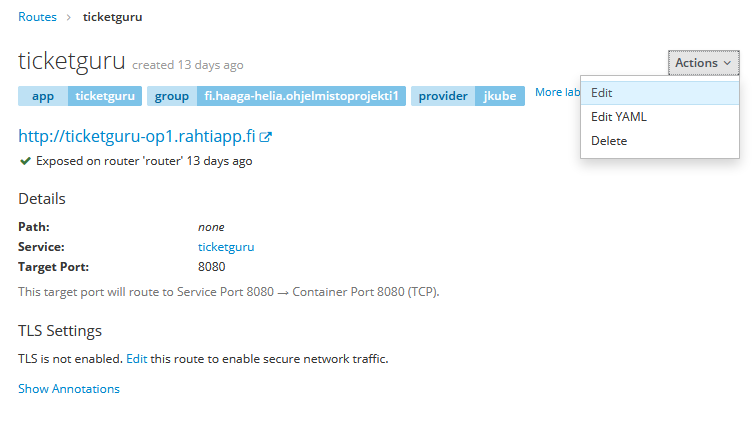
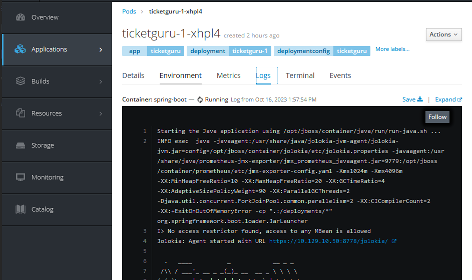

Spring Boot -palvelun julkaiseminen Rahti-ympäristössä
Johdanto
Tässä ohjeessa käydään läpi Spring-palvelun julkaisu Rahti-palvelussa.
Oletuksena on, että julkaistavassa palvelussa on Spring-palvelin sekä relaatiotietokanta. Julkaisu tehdään seuraavassa esimerkissä vaiheittain:
- Rahti-projektin luonti
- Tietokantapalvelun luonti
- Spring palvelimen julkaisu ilman ulkoista tietokantaa
- Spring-palvelimen konfigurointi käyttämään ulkoista tietokantapalvelua
Rahti-projektin luonti
Jotta Rahti-palvelua voi käyttää, pitää sen olla otettuna käyttöön MyCSC projektissa ja itse Rahti-palveluun pitää olla määriteltynä Rahti-projekti.
Kirjaudu Rahti-palvelun web-käyttöliittymään osoitteessa https://rahti.csc.fi:8443 CSC-tunnuksellasi. Kirjautumisen jälkeen palvelun etusivu näyttää tältä:

Lisää itsellesi Rahti-projekti painamalla ’Create Project’ painiketta näkymän oikeasta yläreunasta. Anna projektille kuvaava nimi.

MyCSC:n projektinäkymässä näkyvä projektinumero tulee mainita Rahti-projektin kuvauskentässä projektia luotaessa. Tällä mekanismilla palvelun käytöstä syntyneet kulut kohdennetaan määriteltyyn MyCSC projektiin.
Kirjaa projektinumero projektin kommenttikenttään seuraavasti:
csc_project:<projektinumero>
Kun painat Create, luodaan Rahti-projekti, johon voidaan määritellä tarvittavia palveluja ja resursseja.
Jäsenten lisääminen Rahti-projektiin
Rahti-projektit ovat henkilökohtaisia, eivätkä ne oletusarvoisesti näy muille. Projektiin voidaan lisätä muita käyttäjiä heidän CSC-tunnuksillaan Resources/Membership-asetuksen kautta.

Voit Rahti-projektin omistajana näin lisätä projektitiimin jäsenet tai kurssin opettajan omaan projektiisi.
Openshift-komentorivityökalun asennus
Red Hat tarjoaa työkalun nimeltään oc OpenShift ympäristön hallintaan komentoriviltä käsin. Linkki oc-työkalun lataamiseen löytyy Rahti-palvelun hallintanäkymästä.

Linkistä avautuvalta sivustolta voi ladata omalle käyttöjärjestelmälle soveltuvan version. Linkeistä latautuu yksittäinen, suoritettava tiedosto nimeltään oc. Kyseisen tiedoston tulee löytyä käyttöjärjestelmän polusta (esim. Windows-ympäristön PATH-muuttujan määrittämässä sijainnissa) tai sen Spring-sovelluksen hakemistosta, mistä komentoja suoritetaan.
Jatkossa oletetaan, että oc-työkalu on asennettu polkuun.
Asennus Windows-ympäristössä
Kopioi oc.exe johonkin hakemistoon koneellasi (esimerkissä c:\openshift\CLI) ja lisää hakemisto polkuun.
$Path = [Environment]::GetEnvironmentVariable("PATH", "User") + [IO.Path]::PathSeparator + "C:\openshift\CLI"
[Environment]::SetEnvironmentVariable( "Path", $Path, "User" )
Rahti-palveluun kirjautuminen komentorivillä
Jotta oc-komentoja voi antaa, on kirjauduttava Rahti-palveluun komentorivin kautta.
Kirjautumiskomennon saa web käyttöliittymänäkymän oikeasta yläkulmasta oma nimi ja sen alta avautuvasta valikosta Copy Login Command.

Liitä komento leikepöydältä paikallisen koneesi komentoriville ja suorita se projektin juurihakemistossa.
Huom! Jos oc-komento ei ole polussa, voi olla tarpeen antaa komennonlle myös polku, esim.
./oc login https://rahti.csc.fi:8443 -token=...
Tietokantapalvelun luominen
Rahti-projektiin voi lisätä esivalmisteltuja kontteja Browse Catalog-näkymästä:


Tässä esimerkissä käytetään MySQL-vaihtoehtoa.
Huom! Tarjolla olevat Ephemeral-versiot tietokantapalveluista käyttävät pelkästään väliaikaista tallennuskapasiteettia ja kaikki mahdolliset muutokset mm. tietokantaan häviävät samalla, kun kontin suoritus loppuu. Pysyvää tallennusta varten tulee valita "tavallinen" tietokantapalvelukontti ja sille dedikoitu Persistent Volume Claim (PVC) -tallennustila.
Etene luontivelhon näkymässä ’Next’ painikkeella konfigurointikohtaan ja täytä kontille haluamasi asetukset. Asetuksista kannattaa täydentää ainakin:
- Database Service Name: Tietokantapalvelun nimi. Tällä nimellä muut kontit löytävät palvelun.
- MySQLConnection Username: Käyttäjätunnus sql-palvelimelle kirjautumiseen.
- MySQL Connection Password: Salasana sql-palvelimelle kirjautumiseen.
- MySQL Database Name. Luotavan tietokannan nimi.

Luontivelho tarjoaa mahdollisuuden luoda tietokannan luonnin yhteydessä salaisuustiedosto (secret), johon talletetaan tietokannan konfiguraatiotiedot.
Salaisuus kannattaa luoda, sillä sitä käyttäen luottamuksellisia konfiguraatiotietoja ei tarvitse tallettaa versionhallintaan, eikä niitä tarvitse lainkaan käsitellä suoraan vaan ne voidaan tarvittaessa lukea salaisuustiedostosta.

Salaisuudet (ja muut vastaavat resurssit) löytyvät Rahti-palvelun web-käyttöliittymästä Resources-valikon alta.

Spring Boot -palvelimen julkaisu
Seuraavassa käydään läpi Spring Boot -palvelimen julkaisu ilman ulkoista tietokantaa.
Tietokannan konfigurointi käsitellään seuraavassa luvussa.
Huom! Jotta tässä luvussa käytettäviä oc-komentoja voi antaa, on ensin kirjauduttava Rahti-palveluun luvun Rahti-palveluun kirjautuminen komentorivillä ohjeiden mukaisesti.
Kirjaudu ensin Rahti-palveluun komentorivillä ja aseta luomasi projekti aktiiviseksi.
oc project myproject
Sovelluksen luonti repositoriosta
Rahti-palvelun työkaluilla voidaan luoda sovelluksen julkaisuun tarvittavat resurssit repositorion sisällön perusteella automaattisesti. Resurssit voidaan luoda joko suoraan lähdekoodin perusteella (Source-to_Image, S2I) tai projektissa määritetyn Dockerfile:n perusteella.
Uusi sovellus voidaan luoda komentorivikomennolla oc new-app. Komennolle annetaan parametrina repositorio-osoite, josta projekti käydään hakemassa.
Sovellusprojektin sijainti repositoriossa
Build-työkalut olettavat, että sovellusprojekti sijaitsee repositorion juurihakemistossa. Jos näin ei ole, voidaan projektihakemisto antaa valitsinparametrilla:
--context-dir=<projektihakemisto>
<projektihakemisto> on suhteellinen polku repositorion juuresta siihen hakemistoon, jossa sovellusprojekti sijaitsee, esim. --context-dir=myproj.
Yksityisen repositorion käyttö
Rahti-työkalut tarvitsevat pääsyn projektin repositorioon. Jos repositorio on julkinen, ei pääsyoikeuksia tarvitse erikseen määrittää.
Jos repositorio on yksityinen, on Rahti-projektille järjestettävä pääsy luvun Julkaisu yksityisestä GitHub-repositoriosta ohjeiden mukaisesti, ja annettavissa komennoissa on lisäksi annettava tieto tarvittavasta SSH-avaimesta valitsimella
--source-secret=<github-creds-secret-name>
<github-creds-secret-name>on salaisuus, joka sisältää yksityisen SSH-avaimen.
Tässä tapauksessa repositorion osoite pitää antaa SSH-muodossa, esim:
git@github.com:<user>/<repositorionimi>.git
Sovelluksen luonti
Seuraavissa esimerkeissä käydään läpi sovelluksen julkaisu molemmilla edellä mainituilla tavoilla. Kaikki komennot tehdään komentoriviltä.
Lisää Spring Boot projektin juureen tiedosto Dockerfile, jonka sisältö on seuraava:
FROM eclipse-temurin:17-jdk-focal as builder
WORKDIR /opt/app
COPY .mvn/ .mvn
COPY mvnw pom.xml ./
RUN chmod +x ./mvnw
RUN ./mvnw dependency:go-offline
COPY ./src ./src
RUN ./mvnw clean install -DskipTests
RUN find ./target -type f -name '*.jar' -exec cp {} /opt/app/app.jar \; -quit
FROM eclipse-temurin:17-jre-alpine
COPY --from=builder /opt/app/*.jar /opt/app/
EXPOSE 8080
ENTRYPOINT ["java", "-jar", "/opt/app/app.jar" ]
Jos repositorio on julkinen, voit luoda projektiin sovelluksen (application) komennolla:
oc new-app <repository-URL>#<branch-name>
<repository-URL> on osoite, josta repositorion voi kloonata
- <branch-name> on haara, josta julkaistaan.
Jos repositorio on yksityinen, on komentoon lisättävä tieto käytettävästä SSH-avaimesta:
oc new-app <repository-URL>#<branch-name> --source-secret=github-ticketguru
Tuloksena syntyy build config ja build käynnistyy. Voit seurata buildin etenemistä web-käyttöliittymässä.
Kun julkaisu on onnistunut, projektiin on ilmaantunut deployment-konfiguraatio (deployment configuration), palvelu (service) sekä toivottavasti käynnissä oleva kontti.
Kun service on luotu. tarvitaan vielä reitti:
oc expose service <service-name>
<service-name> on äsken luodun palvelun nimi, oletusarvoisesti sama kuin sovelluksen nimi. Sovelluksen palvelut voi katsoa web-käyttöliittymästä tai listata komennolla oc get svc.
Tällä syntyy reittikin, ja palvelu on julkaistu verkkoon HTTP-protokollalla. Jos halutaan https-pääsy, on se konfiguroitava erikseen, ks. luku HTTPS-konfigurointi
Jos repositorio on julkinen, voit luoda projektiin sovelluksen (application) komennolla:
oc new-app registry.access.redhat.com/ubi8/openjdk-17:1.18-2~<repository-URL>#<branch-name>
registry.access.redhat.com/ubi8/openjdk-17:1.18-2 on S2I-työkalulevykuva Java 17-sovelluksille
- <repositorio-URL> on osoite, josta repositorion voi kloonata
- <branch-name> on haara, josta julkaistaan.
Jos repositorio on yksityinen, on komentoon lisättävä tieto käytettävästä SSH-avaimesta:
oc new-app registry.access.redhat.com/ubi8/openjdk-17:1.18-2~<repository-URL>#<branch-name> --source-secret=<github-creds-secret-name>
Kun julkaisu on onnistunut, projektiin on ilmaantunut deployment-konfiguraatio sekä toivottavasti käynnissä oleva palvelu.
Tämän jälkeen on vielä avattava palvelulle reitti (route), jolla palveluun pääsee internetistä. Sen voi tehdä komennolla:
oc expose service <service-name>
<service-name> on palvelun nimi
Oletusarvoisesti luodaan salaamaton http-reitti. Jos halutaan https-pääsy, on se konfiguroitava erikseen, ks. luku HTTPS-konfigurointi
Buildin käynnistäminen
Julkaisun jälkeen uusi julkaisu voidaan käynnistää manuaalisesti web-käyttöliittymästä tai komentorivillä oc-komennolla.
oc start-build <build-config-name>
<build-config-name> on oletusarvoisesti sama kuin <deployment-config-name>
Build voidaan myös automatisoida tapahtumaan aina, kun GitHub-repositorioon pusketaan uusi versio lähdekoodista
Buildin automatisointi
Jos sovellukselle on build config, jolla julkaisu tehdään GitHub-repositoriosta, voidaan build konfiguroida käynnistymään automaattisesti, kun repositorioon pusketaan uutta koodia.
Uusi build liipaistaan määrittämällä GitHub-repositorioon webhook, jota repositorio kutsuu aina, kun uusia muutoksia pusketaan.
Webhook-URL löytyy Rahti-palvelun käyttöliittymässä kohdata Builds.

Kopioi URL ja lisää se Github-repositorioon GitHubin web-käyttöliittymän kohdassa Settings/Webhooks/Add webhook.
Content type-asetuksen tulee olla application/json.
Spring Boot -palvelimen konfigurointi käyttämään ulkoista tietokantapalvelua
Seuraavassa esimerkissä konfiguroidaan Spring Boot -palvelin käyttämään projektiin luotua tietokantapalvelua.
Esimerkissä palvelimessa käytettävän tietokannan asetukset hallitaan käyttämällä Spring-profiileja: tietokantakonfiguraatiota varten määritellään oma profiili, joka määritellään käyttöön julkaisuympäriristössä.
Julkaisuprofiilin luonti Spring-projektiin
Profiili voidaan määritellä laatimalla projektiin profiilikohtainen application.properties-määritys. Sen nimeksi tulee asettaa application-<profiilinimi>.properties. Jos esimerkiksi profiilin nimeksi valitaan rahti, tiedoston nimi on application-rahti.properties.
Profiilikohtaiset asetukset luetaan globaalien asetusten lisäksi. Näin esim. julkaisukonfiguraatioparametrit voidaan määritellä jokaista julkaisuympäristöä varten eri tiedostoihin.
Seuraavassa esimerkissä käytetään palvelimen ajoympäristöstä luettavia ympäristömuuttuja-arvoja. Näin julkaisuympäristön konfiguraatioparametreja ei tarvitse viedä versionhallintaan.
Rahti-projektiin luotavat kontit saavat projektiin luodun tietokantapalvelun tiedot ajoympäristöön määritetyistä ympäristömuuttujista, joiden nimi muodostetaan tietokantapalvelun nimen perusteella seuraavasti:
<tietokantapalvelun nimi>_SERVICE_HOST
<tietokantapalvelun nimi>_SERVICE_PORT
Voit avata kontin Terminal-näkymän ja tarkastella ympäristömuuttujia env komennolla. Alla olevassa kuvassa ympäristömuuttujista on listattu muuttujat, jotka kertovat tietokantapalvelun, jonka nimi on mysql-service, tiedot muille Rahti-projektin konteille.

Esimerkki profiilimääritystiedoston sisällöstä, jos tietokantapalvelun nimeksi on asetettu db-service:
spring.datasource.url=jdbc:mysql://${DB_SERVICE_SERVICE_HOST}:${DB_SERVICE_SERVICE_PORT}/${DB_NAME}
spring.datasource.username=${DB_USER}
spring.datasource.password=${DB_PASSWORD}
spring.jpa.show-sql=true
spring.jpa.generate-ddl=true
spring.jpa.hibernate.ddl-auto=update
Huom: Tietokantapalvelinta kytkettäessä muihin kontteihin, on tärkeää käyttää muuttujanimiä eikä esim. IP-osoitetta suoraan. IP-osoitteet voivat muuttua esimerkiksi kontin uudelleen käynnistymisen yhteydessä
Ympäristömuuttujien asettaminen
Profiiliin määritellyt ympäristömuuttujat pitää vielä asettaa. Voit määritellä käynnistettävälle kontille ympäristömuuttujia Rahti-palvelun web-käyttöliittymässä kohdassa Applications/Deployments:
Ympäristömuuttujan arvon voidaan määritellä suoraan tai valita sen jostain projektiin luodusta salaisuudesta.
Ylläolevassa esimerkissä MySQL-tietokannan tietokantakäyttäjän nimi DB_USER ja salasana DB_PASSWORD sekä tietokannan nimi DB_NAME luetaan salaisuudesta, joka luotiin tietokantapalvelun lisäämisen yhteydessä. Aktiivisen profiilin asettavan ympäristömuuttujan arvo SPRING_PROFILES_ACTIVE annetaan suoraan.
Kun julkaisu seuraavan kerran tehdään, käynnistyvässä kontissa ympäristömuuttujat on määritelty.
HTTPS-konfigurointi
Julkaistu palvelu tarjotaan oletusarvoisesti vain HTTP-protokollalla. Palvelu voidaan konfiguroida tarjottavaksi myös HTTPS-protokollalla tai pelkästään HTTPS-protokollalla.
Konfiguroinnin voi tehdä komentorivillä komennolla
oc create route edge --service=<service-name>
Jos olet jo luonut suojaamattoman reitin eikä komento siksi onnistu, voit poistaa vanhan reitin komennolla
oc delete route <route-name>
<route-name> on reitin nimi. Reitin nimi on oletusarvoisesti sama kuin palvelun nimi. Voit listata olemassaolevat reitit komennolla oc get route.
Web-käyttöliittymässä määritys tehdään Rahti-sovelluksen Route-määrittelyssä.


Reitille voidaan konfiguroida TLS käyttöön. Jos sertifikaatin jättää määrittämättä, käytetään oletussertifikaattia. HTTP-liikenteen voi joko sallia, estää tai uudelleenohjata.

Lisätietoa: Rahti Docs: Networking
Virheenjäljitys
Käynnissä olevien konttien (pod) tietoja voidaan tarkastella Rahti-palvelun hallintaliittymässä.
Käynnissä olevat kontit löytyvät helposti Overview-näkymästä.

Lokeja voi tarkastella välilehdellä Logs:

Konttiin saa pääteyhteyden välilehdellä Terminal:

Konttiin saa ssh-yhteyden myös komentorivillä komennolla oc rsh <nimi>. Projektin kontit voi listata komennolla oc get pods.
PS > oc get pods
NAME READY STATUS RESTARTS AGE
dbservice-1-p2smq 1/1 Running 0 4h
ticketguru-11-sbqhn 1/1 Running 0 1h
PS > oc rsh ticketguru-11-sbqhn
~ $
Tietokantaa voi tarkastella tietokantajärjestelmän komentorivityökaluilla tietokantakontin pääteyhteydellä, esim.
$ mysql -u dbuser -p dbname
Projektin uudelleenluonti
Jos sovelluksen luonti oc new-app-komennolla jostain syystä ei onnistu, komennon uudelleenyrittäminen voi olla hankalaa, koska joitakin resursseja on jo luotu.
Helpointa saattaa olla poistaa koko Rahti-projekti ja luoda se alusta saakka uudelleen komentorivikomennnoin.
Seuraavissa esimerkeissä poistettavan ja uudelleen luotavan projektin nimi on myproj.
oc delete project myproj
oc new-project myproj --description='csc_project:200xxxx'
xxxx korvataan oman CSC-projektin tunnisteen neljällä viimeisellä numerolla
Julkaisu paikallisesta hakemistosta JKube OpenShift Maven pluginilla
Eclipse JKube on kokoelma lisäosia ja kirjastoja, joiden avulla helpotetaan Java-ohjelmistojen kontittamista ja julkaisua OpenShift konttipalveluun. JKube OpenShift Maven pluginilla voidaan julkaista sovellus kehitysympäristöstä suoraan paikallisesta hakemistosta (siis ei GitHub-repositoriosta).
Tätä julkaisua ei voi samalla tavoin automatisoida kuin GitHubista tehtäviä julkaisuja.
Lisäosan käyttöönotto on suoraviivaista: Lisää Spring Boot projektin pom.xml tiedostoon JKube-lisäosan määritys:
<build>
<plugins>
<plugin>
<groupId>org.eclipse.jkube</groupId>
<artifactId>openshift-maven-plugin</artifactId>
</plugin>
</plugins>
</build>
Kirjaudu rahti-palveluun komentorivin kautta.Tämän jälkeen julkaisu voidaan tehdä maven -komennolla:
./mvnw package oc:build oc:resource oc:apply
Komennon päättymisen jälkeen Rahti-projektin Overview-näkymästä voit saada tietoa julkaisun tilasta ja onnistumisesta, sekä löydät julkaistun palvelun URL-osoitteen.

Ympäristömuuttujien asettaminen JKube OpenShift Maven pluginia käytettäessä
Koska OpenShift Maven plugin yliajaa kaikki web-käyttöliittymässä tehdyt konttiasetukset, on sitä käytettäessä määritykset tehtävä pluginin määritystiedostossa.
Tarkista Rahti-palvelun hallintakäyttöliittymästä tietokannan luonnin yhteydessä luodun salaisuuden nimi. Tässä esimerkissä se on mysql-secret.
Lisää Spring sovelluksen hakemistorakenteeseen src/main/jkube tiedosto nimeltään deployment.yml.
spec:
template:
spec:
containers:
- env:
- name: MYSQL_USER
valueFrom:
secretKeyRef:
key: database-user
name: mysql-secret
- name: MYSQL_PASSWORD
valueFrom:
secretKeyRef:
key: database-password
name: mysql-secret
- name: MYSQL_DATABASE
valueFrom:
secretKeyRef:
key: database-name
name: mysql-secret
- name: SPRING_PROFILES_ACTIVE
value: rahti
Parametrien selitykset:
- name on asetettavan ympäristömuuttujan nimi
- valueFrom.secretKeyRef.name määrittää, minkä nimisestä salaisuudesta arvo luetaan. Vaihda tähän omasta ympäristöstäsi oikea salaisuuden nimi.
- valueFrom.secretKeyRef.key määrittää, mistä salaisuuden kentästä arvo luetaan.
- Lopuksi asetaan ympäristömuuttujan SPRING_PROFILES_ACTIVE arvoksi halutun profiilin nimi. Käytettävä Spring-profiili voidaan asettaa ympäristömuuttujalla SPRING_PROFILES_ACTIVE.
Huomaa, että tiedostomuoto on YAML. Sen rakenteeseen on tarvittaessa hyvä hakea vinkkiä web-käyttöliittymästä valitsemalla tietokantapodin valikosta Edit YAML.
Suorita uudelleen komento
./mvnw package oc:build oc:resource oc:apply